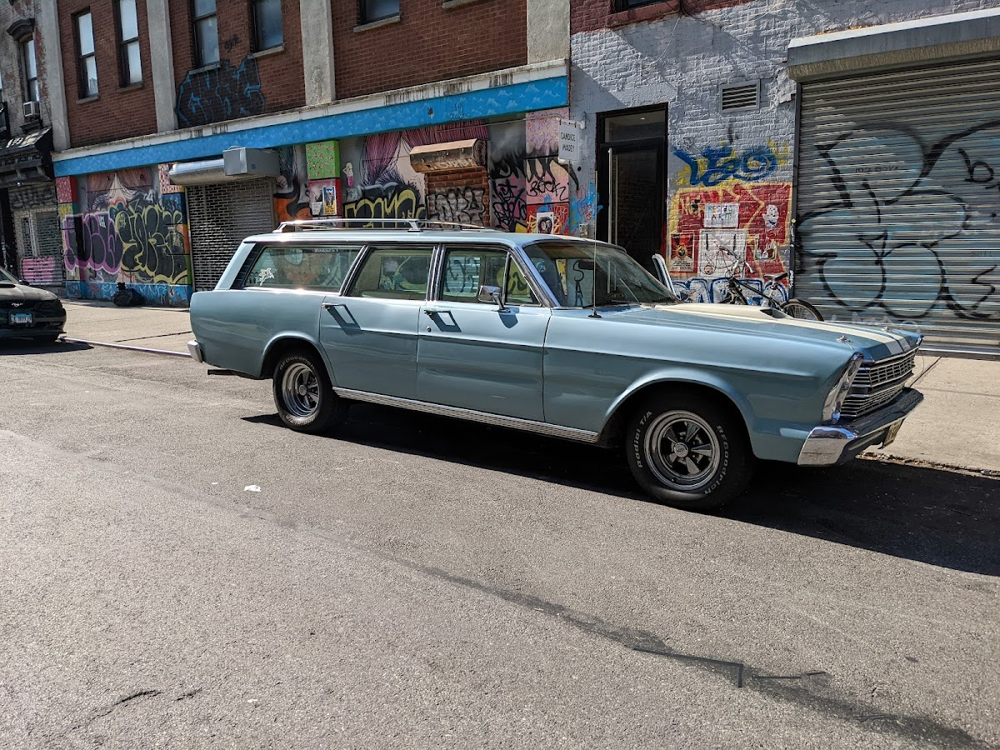
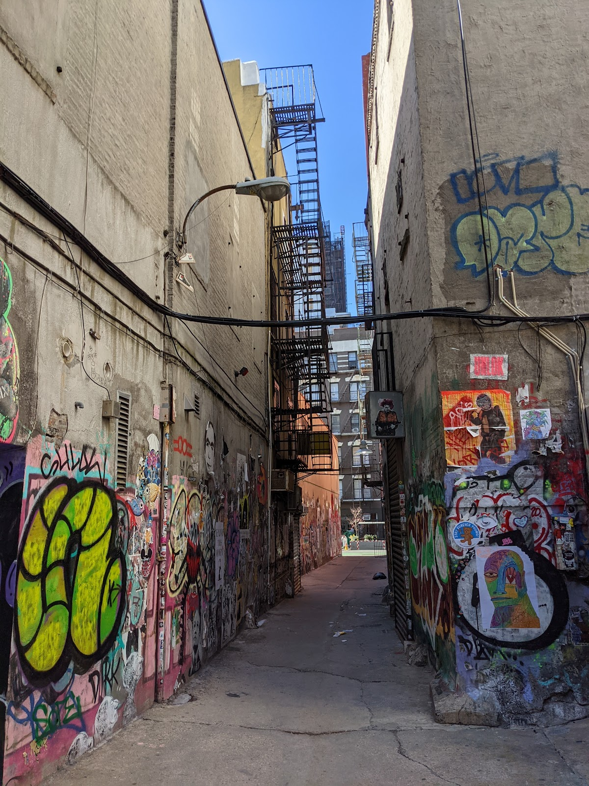
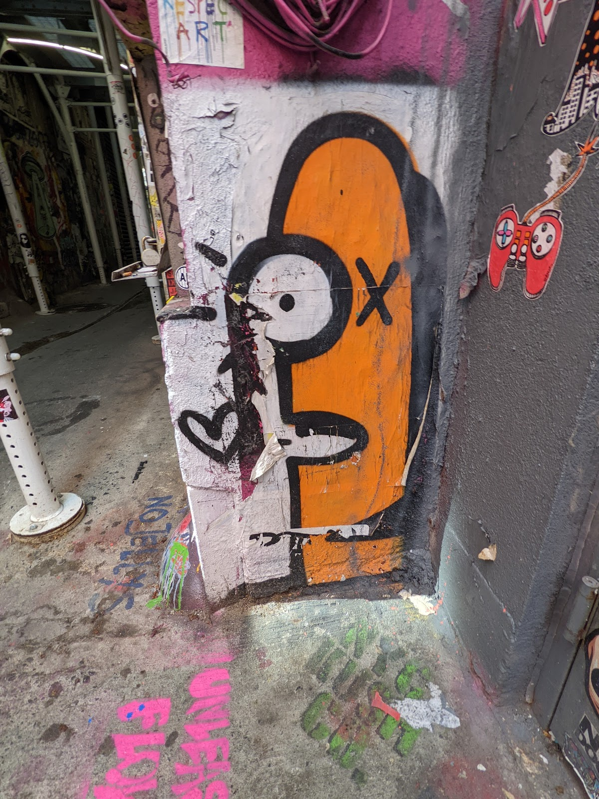
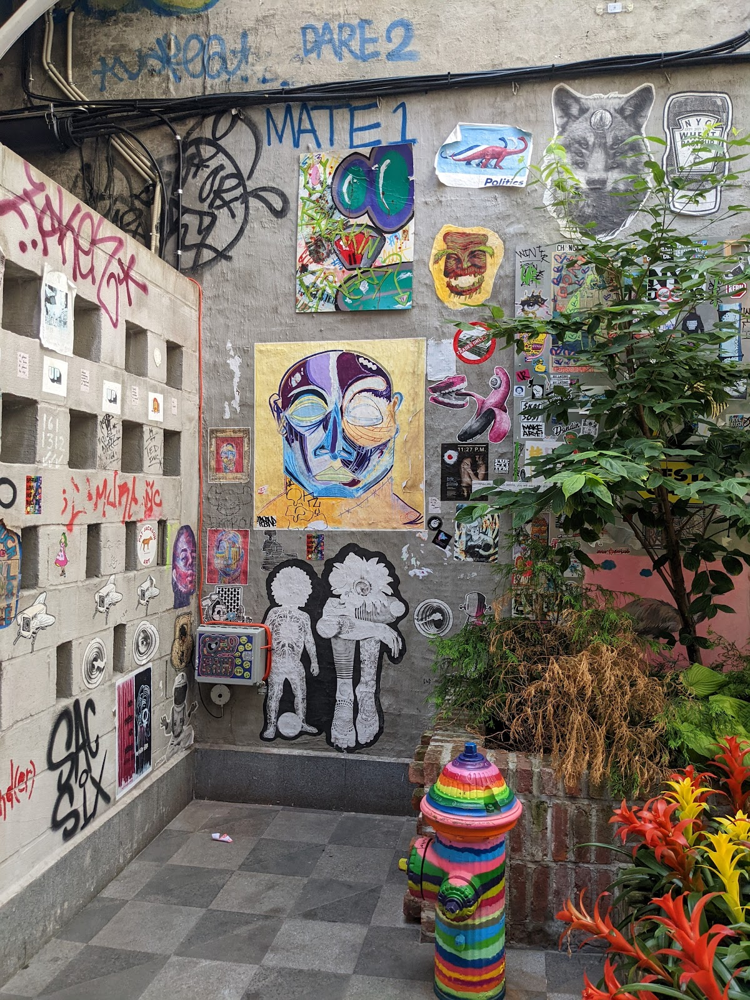
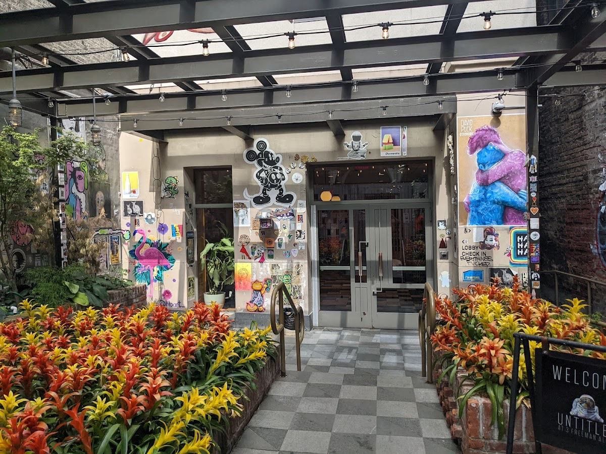

Streets
Freeman Alley
A small, graffiti-covered alley in the Lower East Side of Manhattan.
Background
Freeman Alley has become a canvas for street artists and is home to a popular restaurant. Its history is tied to the artistic and cultural evolution of the Lower East Side, reflecting the neighborhood's vibrant street art scene.
Original AI-assisted background; not independently verified.
Check current access before visiting. A place on this map is not necessarily open to the public.
Nearby places
Straight-line distances, not walking routes.
Discussion & corrections





40.72181, -73.99255 · Explore the surrounding area ↗